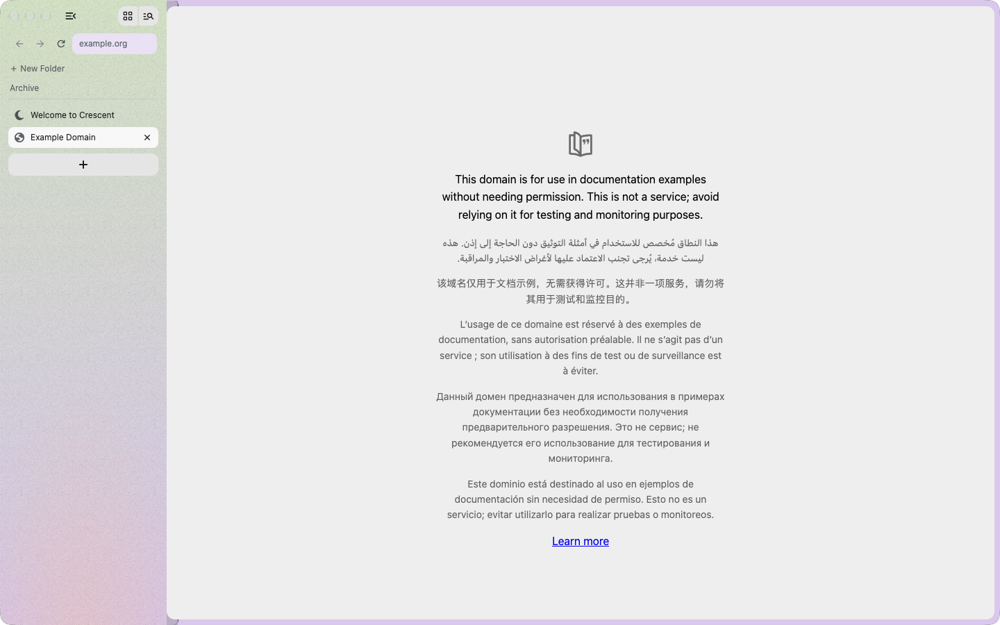

A place for every thought.
Spaces, folders, and pinned tabs keep projects in order. Separate Profiles keep work and life apart.
FAMILIAR FROM THE FIRST TAB
A familiar flow. A freer future.
A Chromium browser for people
who love the web.

Follow a thought. Find a new perspective. The best ideas rarely travel in straight lines.
The sidebar. The shortcuts. That feeling when everything is right where you left it. We’re building Crescent to bring that flow forward — with a future you can help shape.
Spaces, folders, and pinned tabs keep projects in order. Separate Profiles keep work and life apart.
FAMILIAR FROM THE FIRST TABKeep your reference beside your work. Split panes make a little room for the bigger picture.
LESS WINDOW JUGGLINGA command bar when you need it. Shortcuts where you expect them. ⌘D to pin a page and keep going.
CTRL+D ON WINDOWS & LINUX
Quiet sage. A touch of Prism.
Your browser should feel like
your space.
A browser belongs to the person using it. Crescent Hub is being built to connect your devices through a computer you control, on your own network.
How personal hosting will work your hubYOUR HARDWARE
your hubYOUR HARDWARE
The web is better when it’s open.
We think your browser should
be, too.
Open source is the direction, from the browser to the personal Hub. Explore the work, raise an issue, or help shape what comes next.
Build with us on GitHubA familiar foundation for the modern web. Built around the sites and developer tools you already use.
Chrome extension support is a core requirement. Compatibility testing is underway for the beta.
We’re working toward a faster, steadier everyday browser. Arc and Dia comparisons will follow reproducible benchmarks.
Your browser is full of little things that matter. Crescent’s import preview is being built to help you bring your setup along, one Profile at a time.
Import preview is in development. Source coverage varies; full migration is still being tested.
A little less setup. A lot more you.
Made for every kind of desktop.
Follow along. Help build it.
Make it yours.
Native development build
Development builds testedA first-class desktop target
Planned · builds pendingYour distro deserves a good browser
Planned · builds pendingCrescent is in active development. Public beta downloads aren’t available yet.
Public beta downloads aren’t available yet. The macOS development app has passed selected native tests; Windows and Linux are targets awaiting builds and validation. Follow the GitHub organization for release announcements.
Crescent is being built toward an open-source browser, mobile app, and personal Hub. The browser project’s license selection is still pending. Source visibility and a finalized open-source license will be confirmed before a public release.
That’s the plan. Crescent Hub is intended to run on a computer you control, on macOS, Windows, or Linux, to connect your devices. Secure pairing, authenticated transport, and encryption are still being implemented and reviewed. It is not yet a production self-hosted service.
No. Cookies and site storage never sync. The planned continuity system focuses on your browsing organization, while keeping each device’s website sessions local.
Arc, Chrome, Zen, Dia, and Firefox are the primary import targets. Import previews and synthetic-fixture tests are in development. Full real-world migration, including extensions and split layouts, is still being validated.
Speed and stability are goals. We haven’t completed comparable release benchmarks, so we won’t give you an invented number. We’ll publish the method and results when the builds are ready to compare.